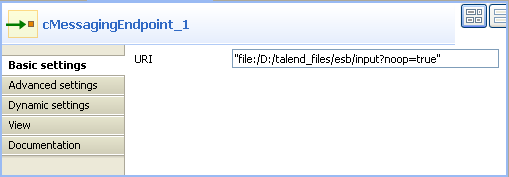
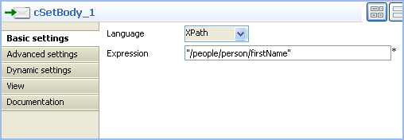
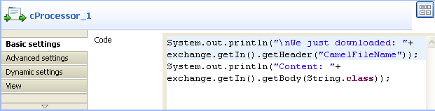
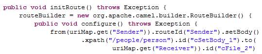
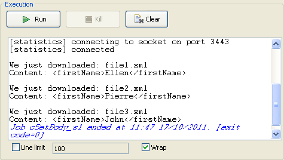

Component Family | Transformation | |
Function | cSetBody replaces the payload of each message sent to it. | |
Purpose | cSetBody is used to replace the content of each message sent to it according to expression value. | |
|
Basic settings | Language | Select the language of the expression you use to set the content for matched messages, from Constant, EL, Groovy, Header, JavaScript, JoSQL, JXPath, MVEL, None, OGNL, PHP, Property, Python, Ruby, Simple, SpEL, SQL, XPath, and XQuery. |
| Expression | Type in the expression to set the message content. |
Usage | cSetBody is used as a middle component in a Route. | |
Limitation | n/a | |
In this scenario, file messages are routed from one endpoint to another, with the content of each message replaced with the information extracted from it.
The following is an example XML file used in this use case:
<people>
<person>
<firstName>Pierre</firstName>
<lastName>Dubois</lastName>
<city>Paris</city>
</person>
</people>This use case uses two cMessagingEndpoint components, one as the message source and the other as the receiving endpoint, a cSetBody component to replace the content of the messages, and a cProcessor component to display the new content of the messages routed to the receiving endpoint.
From the Palette, expand the Messaging folder, and drop two cMessagingEndpoint components onto the design workspace.
From the Transformation folder, drop a cSetBody component onto the design workspace, between the two cMessagingEndpoint components.
From the Processor folder, drop a cProcessor component onto the design workspace, following the second cMessagingEndpoint component.
Right-click the first cMessagingEndpoint select Row > Route from the contextual menu and click the cSetBody component.
Repeat this operation to connect the cSetBody component to the second cMessagingEndpoint component, and the second cMessagingEndpoint component to the cProcessor component.
Double-click the input cMessagingEndpoint component to display its Component view, and type in the URI of the source messages in the URI field.
As we are handling file messages, type in "file:/" followed by the path to the folder containing the files to send, with the noop file specific option. This option tells Camel to leave the files as is, instead of moving them from their original folder.
Double-click the cSetBody component to display its Component view.
From the Language list box, select the language of the expression you are going to use.
Here we are handling XML files, so select XPath from the list box.
In the Expression field, type in the expression that will return the message body content you want.
In this use case, we want each file contains only the firstName node when routed to the destination.
Double-click the receiving cMessagingEndpoint component to display its Component view, and fill the URI filed with the URI of the folder you want to send your messages to.
As we are handling file messages, type in "file:/" and the path to the folder to which the files will be sent.

Double-click the cProcessor component to display its Component view, and customize the code so that the console will display information the way you wish.
Here, we want to use this component to monitor the message routed to the connected endpoint and display the file names and the message content, so we customize the code accordingly, as shown below.
Press Ctrl+S to save your Route.
Click the Code tab at the bottom of the design workspace to have a look at the generated code.
In this partially shown code, a message route is built
fromone endpoint.toanother, and while in routing, the body content of each message is replaced according to the condition.setBody.Click the Run view to display it and click the Run button to launch the execution of your Route. You can also press F6 to execute it.

RESULT: The XML files are sent to the defined destination, where each file contains only a firstName node.